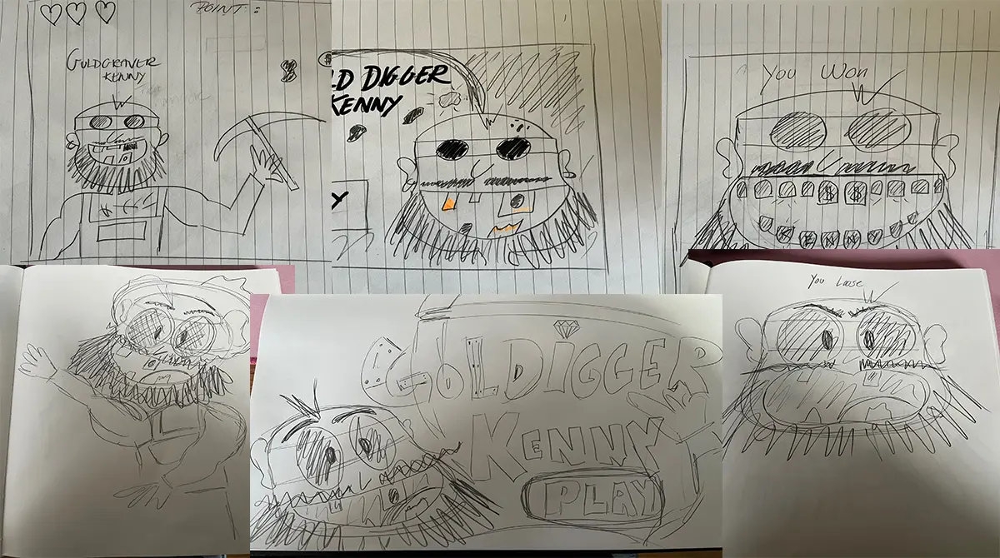
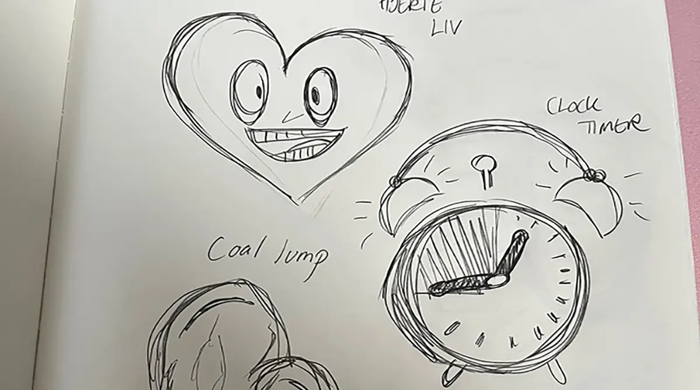
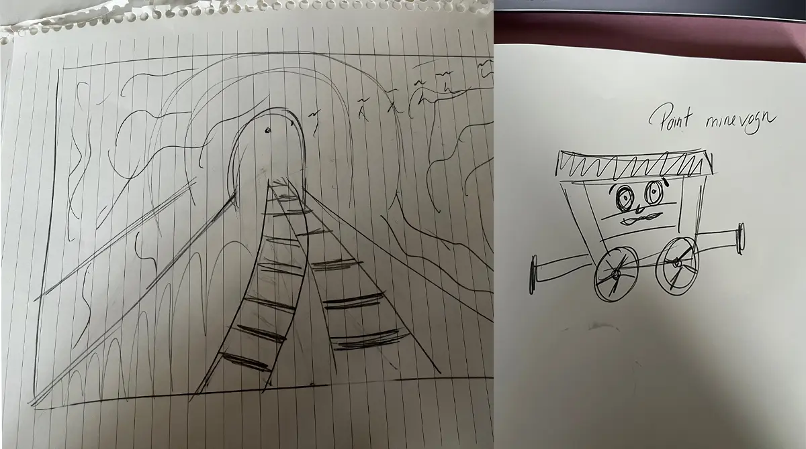
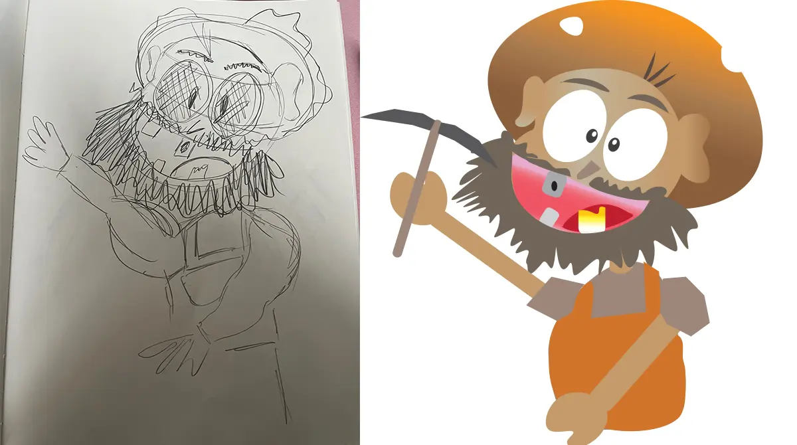
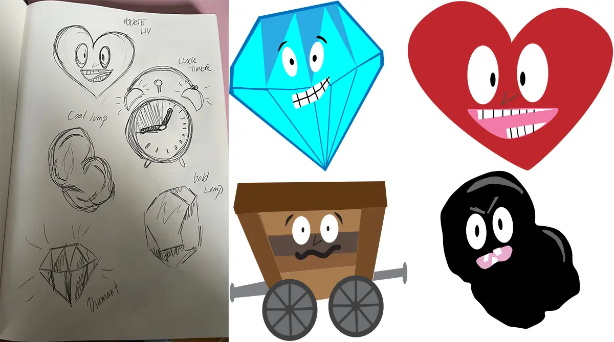
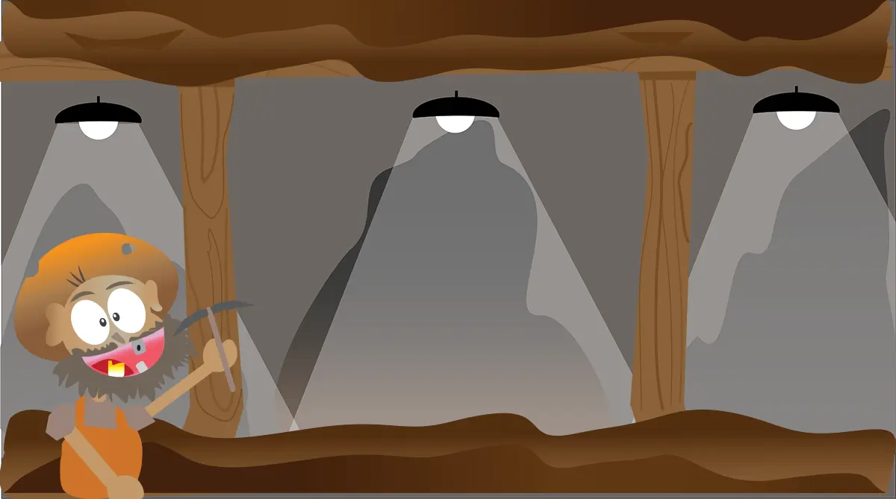
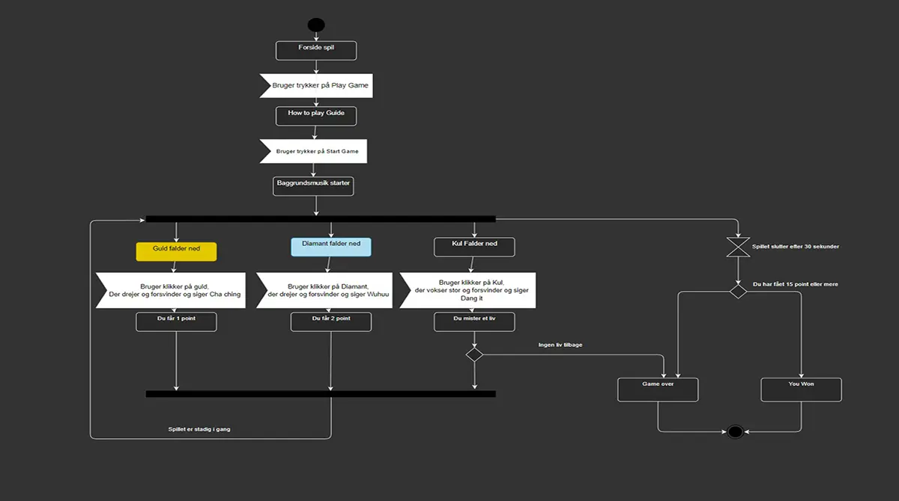
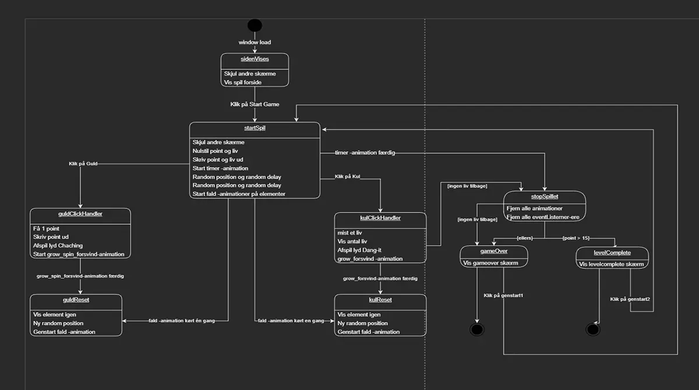

GRUNDLÆGGENDE ANIMATION
I dette tema har vi opnået en grundlæggende forståelse for Javascript der bruges til at kode interaktive elementer. På dette tema har vi lavet et spil med animationer kodet i javascript med CSS classes.
Gafiske elementer & Design
Med udgangspunkt i eget valgt koncept, skulle vi designe spillet ud fra forståelsen af designkonventioner fra tidligere temaer og UI elementer. I temaet har vi fået en grundlæggende gennemgang af funktioner i Adobe Illustrator. Herigennem har vi tegnet spilbaggrunde, vinder -og taber skærm, UI elementer som tid, point og liv spil, samt spilelementer.
Mit valgte koncept er et Guldgraver spil, hvor man skal klikke på guld og diamanter der falder ned fra skærmens top. Der falder også kulklumper ned, som man mister et liv på, når man klikker. Spillet er lavet med min nevø i tankerne der er 6 år.
Som en del af designfasen har vi arbejdet med sketch af vores elementer og baggrunde. Jeg har valgt at sketche alle mine elementer i hånden og herefter brugt Illustrator til at place en skitse af min sketch, jeg kunne tegne efter.
Vi skulle som en del af designprocessen tage stilling til hvilken stilart vi ville lægge os op ad. Jeg har valgt en Cartoon Network stil, hvor figurene har kraftige farver, er bygget op af former og har et sjovt udtryk. Figurerne har meget lidt eller ingen skygger, dette er et bevidst valg i forhold til den valgte stil.
Til min hovedfigur har jeg valgt at benytte twinning, så han er drejet lidt i overkroppen og gar en arm oppe og en nede, for at give ham dimension.
Jeg har valgt at bygge min baggrund op af en baggrund, mellemgrund og forgrund, dette giver noget dimension til spillet og gør at jeg kan placere mine spilelementer på baggrunden, så de forsvinder bag sten og træ stolper i stedet for bare at ryge ud af skærmen.
Javascript & Diagrammer
Websitet har jeg kodet fra bunden med HTML, CSS og Javascript.
I min kode, har jeg mange kommentarer på min Javascript, der fortæller hvad de forskellige funktioner gør. Jeg har ligeledes også lavet et Javascript cheatsheet, som jeg kan bruge når jeg skal sætte Javascrit op på andre sider.
På dette site er mine to spil elementer sat op med Javascript og CSS. Den ene er sat til at roterer endeløst når siden er loaded og den anden er sat til at hoppe. Jeg har haft udfordringer med at sætte det op i mobil og tabletversion. Og er ikke lykkes helt med. Det er noget jeg håber at videre uddannelse vil gøre mig klogere på.
Gennem arbejdet med spillet har jeg lært om aktivitets -og statemachine diagrammer, der er blevet brugt til at planlægge flowet i spillet. Vi har løbende arbejdet med diagrammerne i temaet på øvelser og brugt dem til at kode efter.
Skitse udkast af karakter
Første udkast til mit hovedkarakter i spillet.
Skitse af UI elemneter & Baggrund
 Første udkast til mine UI elemneter og baggrund i teamet.
Endelig Karakter i Illustrator
Min skitse og endelige figur.
UI elementer og baggrund i Illustrator
 Skitse og endelige UI elemnter og baggrund.
Animation
Animation på en af mine dårlige spilelemnter, sat op med Javascript og CSS.
Animation
Animation på en af mine gode spilelemnter, sat op med Javascript og CSS.
Aktivitetsdiagram
Aktivitetsdiagram der fortæller hvilket flow der er i spillet.
Statemachinery diagram
STate Machinery diagram der fortæller med classes fra CSS og functions fra Javascript hvad der sker når der animation i spillet.